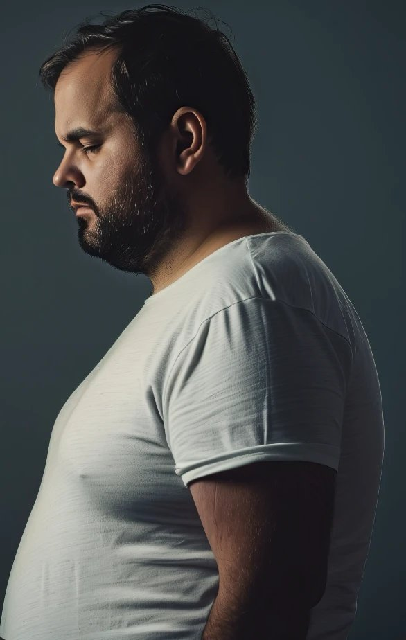
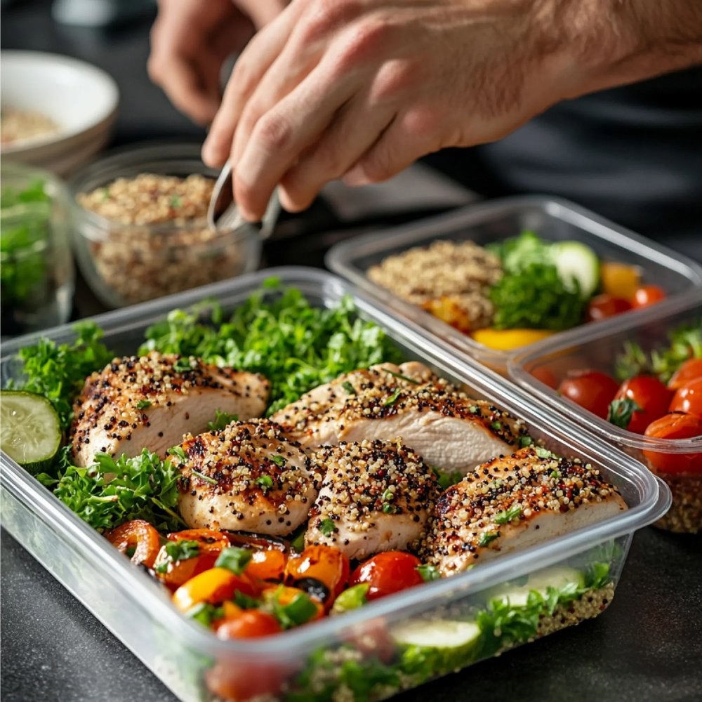
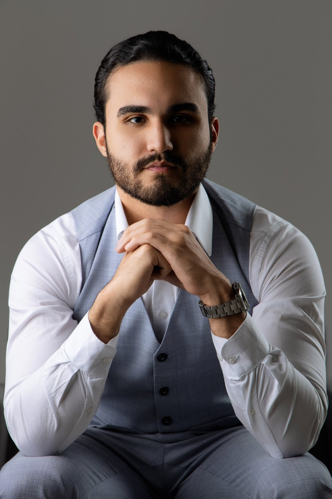

1. Consulta Médica Completa
Avaliação detalhada do seu histórico, rotina, hábitos e objetivos.
Transforme sua saúde, sua disposição e sua relação com o próprio corpo através de um tratamento individualizado e baseado em ciência.
Agendar consulta

Talvez você já tenha tentado:
O emagrecimento envolve hormônios, metabolismo, comportamento e rotina. Sem investigar a causa, os resultados não se sustentam. Com um olhar médico e individualizado, o processo se torna possível — e duradouro.
Agendar consultaUm passo a passo estruturado para resultados reais e sustentáveis.
Avaliação detalhada do seu histórico, rotina, hábitos e objetivos.
Exames e análise hormonal para entender o que está travando seus resultados.
Estratégia personalizada, pensada para o seu corpo e a sua realidade.
Retornos e ajustes constantes para manter a evolução em todas as fases.
Foco em manter o peso conquistado e criar hábitos para a vida toda.
Transformações conquistadas com acompanhamento médico, estratégia e constância.
Agendar consultaDr. Ramon Claros é médico (CRM-SP 275893) com atuação focada em emagrecimento, saúde hormonal e transformação corporal. Acredita que cada paciente é único e que o tratamento deve ser individualizado, humano e baseado em evidências científicas.
Seu trabalho é construído sobre três pilares:
Seu objetivo vai muito além dos números na balança: é devolver saúde, disposição, autoestima e qualidade de vida.

Os atendimentos são particulares. Fornecemos nota fiscal para que você possa solicitar reembolso junto ao seu plano, conforme as regras do seu contrato.
Depende de cada caso. O uso de medicamentos só é indicado após avaliação médica completa, quando há benefício e segurança para o paciente.
Não. O acompanhamento é indicado tanto para quem precisa perder muito peso quanto para quem busca melhorar composição corporal, energia e saúde hormonal.
Não. O plano é construído de forma individualizada e sustentável, respeitando sua rotina e suas preferências.
Atendemos presencialmente em Campinas – SP e também oferecemos consultas online. Fale com a nossa equipe para saber a melhor opção para você.
Cada organismo responde de uma forma, mas muitos pacientes já percebem mudanças nas primeiras semanas de acompanhamento.
Você não precisa continuar tentando sozinho.
Clique no botão abaixo e converse com nossa equipe para agendar sua consulta e dar o primeiro passo.